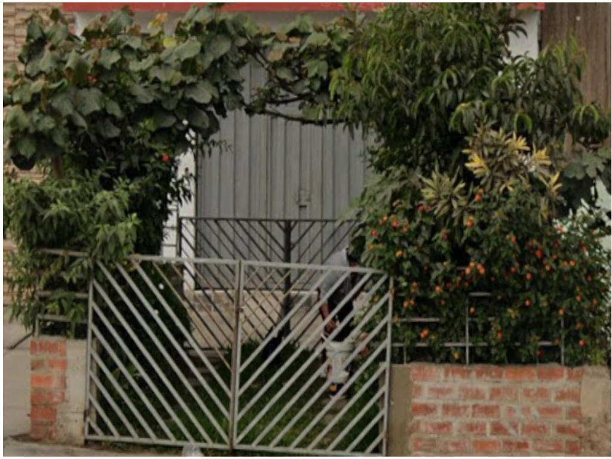

El Misterio detrás de la Puerta Escondida:
¿Qué se esconde tras la exuberante vegetación?

[Ciudad por perú] - [1/10/2025] -
En un entorno urbano donde el concreto y el asfalto dominan el paisaje, una singular fachada residencial
ha capturado la atención de los transeúnt y se ha convertido en un punto de curiosidad local.